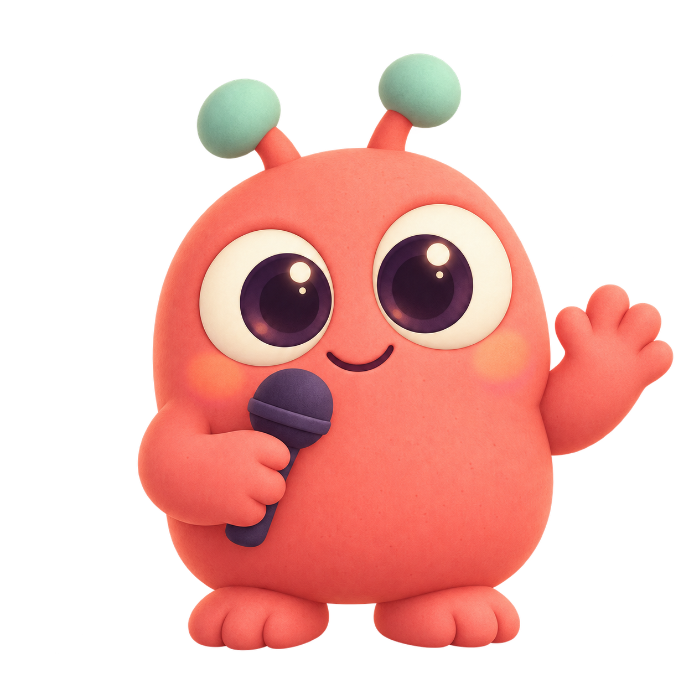

SpaceX sample · educational demo
A big idea, in six little pieces.
Your script, your facts, your pace.
A little practice goes a long way
Find your words, one small section at a time.
A friendly
place to try, pause, and try again.
No microphone needed. No speech uploaded.
YOUR NEXT SMALL STEP
Start small. You can change everything later.
Your script, your facts, your pace.
Paste a script, shape your sections, and keep the facts that matter.
Taking a break is part of practicing. There are no streaks to keep.
YOUR LITTLE PRACTICE SPACE
See yourself alongside your words.
Take a breath, then
make it your own.
Your script is right beside you.
This take is held only in this tab. Download it before leaving.
3-second countdown · Camera view is mirrored; the saved video isn’t
Independent educational demo. No SpaceX or NASA affiliation.
End of speech. You’ve got this.
A MANAGEABLE BEGINNING
Pick an idea. Keep your words nearby.
You can use
less help when you’re ready.

YOUR PLAN FOR THIS PRACTICE
The timer guides you. It won’t cut you off. To record, open Recording & slides and enable a microphone.
A PRACTICE, FINISHED.
No grade. Just a moment to notice what you want to try next.
Your self-check is your recollection. Transcript evidence is separate. Check protected facts and the ending yourself.
Your practice stays in this tab. Save or export below if you’d like to keep it.
These are your editable decisions. Each applied change creates a new plan version; earlier practices keep their original plan.
Practice stays in this tab until you save or export. Saving keeps plan snapshots and self-checks in this browser. It never includes recordings or transcripts.
Not saved yet
Optional English Whisper tiny.en runs on this device. Download about 66 MB from this app’s host. No speech or text is uploaded. Manual practice stays available while you wait.
Optional assets must be installed by this app’s host. Manual practice works offline after the app loads.
WebM, MP4 and OGG depend on browser decoding. Limit: 20 minutes / 100 MB. Pauses are excluded from recorded-time timestamps. Tiny English recognition can mishear facts or invent words; check the recording. Camera-only takes have no audio to transcribe.
Changes save in this browser. Script and cue cards are edited separately.